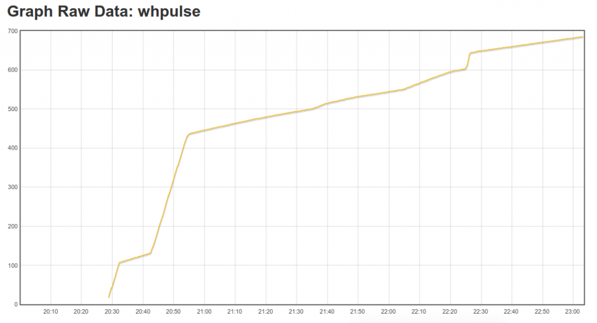

I've integrated interrupt pulse counting into the main emonTx V3.4 firmware, we are not yet shipping units with this new firmware. I would like to make sure that it's fully tested. Please give it a go if pulse counting is of interest to you. I've also simplified the serial print debug output.
The number of pulses counted is returned, this value can be used with wh accumulator in emoncms and scaled to match the number of wh/pulse on your meter. I am going to explore the possibility of getting optical pulse sensors made up with the correct RJ45 connection for plug-and play operation with emonTx V3.4 and emonPi.
https://github.com/openenergymonitor/emonTxFirmware/blob/master/emonTxV3...
Be sure to change the first line of code if using RFM12B.
I have also made an example to auto detect and sample from multiple (up to six) DS18B20 sensors:
https://github.com/openenergymonitor/emonTxFirmware/blob/master/emonTxV3...
Re: emonTx V3.4 firmware with interrupt pulse counting
What advantages does this bring, or is it just widening available options?
Paul
Re: emonTx V3.4 firmware with interrupt pulse counting
Excellent addition, this does give greater options ie gas or water etc
The immediate advantage I see is by actually reporting the "metered" amount of electric rather than measured amount is in the accuracy of the accumulated kwh readings, (assuming water tight transportation of the pulse count). This can be used to confirm the calculated kwh is in line with the metered plus when PV diverters are used the "bucket filling and emptying" is included in any import and export calcs but not "seen" by the meter as they cancel each other out, This causes in accurate import and export totals.
Pulse counting may also allow some sort of "led pulse watching" code to evolve to confirm if energy use is "chargeable" or not as discussed in emonTx_continuous_watthours - Add Voltage reading
Paul
Edit - Just realized this has been added to the "main emonTx V3.4 firmware" aka "discrete sampling" so it will add an accurate method of reporting kwh's rather than being based on estimated power use, so I guess the gains in accuracy will be greater. Although I'm now wondering if the "discrete sampling" sketch is constantly being awoken by the interrupts, if the jump to continuous sampling should be considered?
Re: emonTx V3.4 firmware with interrupt pulse counting
Yes, I thought it would good to add it in. There is no reason not to. Agreed counting a pulse will wake up the ATmega if it's in battery power sleep mode. However counting a pulse will only result in being awake for a short period of time. However I would recommend power via AC or DC with jumper removed when pulse counting as if a TSL257 sensor is used the sensor will need to be powered all the time waiting for a pulse.
Work is underway to develop a version of continues sampling which can handle interruptions from such activities such as temperate sensing and pulse counting ie. continues sampling with pauses! The unit would revert back to discrete sampling with sleep if being powered by batteries.
Re: emonTx V3.4 firmware with interrupt pulse counting
Tonight I hooked to a TSL257 optical sensor to my home emonTx V3.4 to test out the new code. It worked great. I've updated the emonTx V3.4 wiki with RJ45 pinout http://wiki.openenergymonitor.org/index.php?title=EmonTx_V3.4#Optical_Pulse_Counting.

I plan to compare the pulse counts with the Kwh generated from the CT's. I'll let you know how they compare!
Re: emonTx V3.4 firmware with interrupt pulse counting
I think there could be an issue with:
// The interrupt routine - runs each time a falling edge of a pulse is detected void onPulse() { emontx.pulseCount++; }I don't think you want the ISR manipulating a 32-bit field directly in the live packet buffer. The RF transmit stuff is presumably going to be copying/processing that packet buffer a byte at a time. So imagine the situation where pulseCount is currently 0x000000ff. The next pulse is going to be changing 2 byte locations, as the value changes to 0x00000100. Even worse if the value is currently 0x00ffffff. In that case, the next pulse is going to change 4 consecutive byte locations as the value changes to 0x01000000. If the lower layer transmit code happens to be processing in the middle of that byte stream as the next pulse arrives, it will pick up some bytes from before the increment, and some from after, and get the wrong result.
Re: emonTx V3.4 firmware with interrupt pulse counting
Hi,
Definitively a good addition in the main sketch.
I tested the TSL257 optical sensor few month ago with a similar sketch. The sensor was in front of the led of an electric meter (1 pulse = 1Wh). It worked like a charm even if the number of pulse was high (between 1 and 10 pulses per seconds which means 3.6-36kW). After three months, I got the same amount of kWh (18 000 kWh) on EmonCMS and on the meter reading.
Note that this sketch should not work when counting gas or water with a read switch if some bounces or spikes occur. One may filter the signal with a RC circuit but it's not so simple ... Another way is to "filter" the signal directly in the sketch. Instead of triggering interrupts, one can poll the state of the switch every xxx ms to detect a "true" falling/rising edge. This method has been described and implemented here. This can easily be combine with a discrete sampling sketch. I'm doing it for month with success.
Eric
Re: emonTx V3.4 firmware with interrupt pulse counting
I've been thinking about making some mounts along the lines of these ones:
http://www.abacuselectrics.com/probes.htm
using glued-together stacked discs made of laser-cut acrylic sheet (with different shaped 'layers' with cut-outs etc. to house photo transistors, magnets, cable tie "ears" etc.).
Or might be worth contacting the Abacus bloke to see if he's up for selling his proper injection moulded (I'm guessing) plastic housings, or even complete units?
Would help to solve the mounting issues, and also the stray light issues for meters which use the ANSI/IEC style disc recesses, with the LEDs in the middle...
Tim.
Re: emonTx V3.4 firmware with interrupt pulse counting
Thanks for link. Those enclosures look good. I just sent them an email. Physical attachment is the crux of pulse counting. The hardware and software is easy in comparison!
Re: emonTx V3.4 firmware with interrupt pulse counting
Is it possible to get also a real time power number from this pulse counter to emoncms?
Re: emonTx V3.4 firmware with interrupt pulse counting
Yes and no. It can be problematic at low power.
Each pulse corresponds to a certain amount of energy. You can derive an approximate power from the energy but not the exact average power.
Imagine an electric meter which generate 1 pulse per 1 Wh. If the real power is 180 W, it means that you will get one pulse every 20s. So, if you try to derive the power from the number of pulses seen in the last 10 seconds (KwhtoPower in Emoncms), you will get 0 pulse (0W), 1 pulse (360W), 0 pulse (0W), 1 pulse (360W), .... In a general way, the resolution is only 360W per pulse with that rate (10s) and that meter (1pulse=1Wh). To get a better precision, you must count the pulses on a longer period.
Another option is to measure the time between the two last pulses (to be done in the sketch). It will give you the average power between the two last pulses. You can then transmit this value every 10 second to emoncms but it's not the average power on the last 10 seconds.
Eric
Re: emonTx V3.4 firmware with interrupt pulse counting
For me personally, it would be enough if I got a real time power every 30s or even every 60s. As I'm not very familiar to this system, I must ask if this is possible to do in the emoncms page or does it need to be done in emonTX sketch?
Re: emonTx V3.4 firmware with interrupt pulse counting
Hi,
You have to modify the sketch given above by Glyn in order to send data to emoncms every 30s or 60s (fro the moment the TIME_BETWEEN_READINGS is 10s).
Then two options :
- 1. you can derive the power from the kWh using a process in emoncms
- 2. you can modify the sketch in order to calculate the power directly in the sketch
I faced many problems using the first one. I think the second one is safer.
Eric
Re: emonTx V3.4 firmware with interrupt pulse counting
Thanks Eric for your answer. As my programming skills are close to zero so far, I will be waiting if someone will someday make that kind of sketch.
Re: emonTx V3.4 firmware with interrupt pulse counting
I managed to get it work finally. The pulse counting is used to get the total power usage of the house and then I use CT1 to measure heat pump power consumption. Thanks for great software!
Re: emonTx V3.4 firmware with interrupt pulse counting
Here are some more options for commercial pulse counting sensors:
http://www.radianresearch.com/products/RM-1H.php
http://www.probewell.com/products/accessories/
http://solidstateinstruments.com/productpages/opp-1i-optical-pulse-pickup.php
http://www.tesco-advent.com/equipment-1037-stnd-optical-pick-up.html
Re: emonTx V3.4 firmware with interrupt pulse counting
and another option:
http://www.tespro.com.cn/en/TP-12.php
Re: emonTx V3.4 firmware with interrupt pulse counting
I'm also interested in buying commercial pulse counting sensors
Another one:
http://circutor.es/en/products/measurement-and-control/control-devices/a...
Re: emonTx V3.4 firmware with interrupt pulse counting
I made a simple setup with electronic imp - counting the pulses from a Enermet ES 420 energy meter.
10.000 Pulses is 1 Kwh . and successful uploading data once every minute to emoncms
Newer succeeded to do a basic configuration on http://emoncms.org to use it so i gave up.
Couldn't get any usefully help in the forum
might gonna try again.
good luck